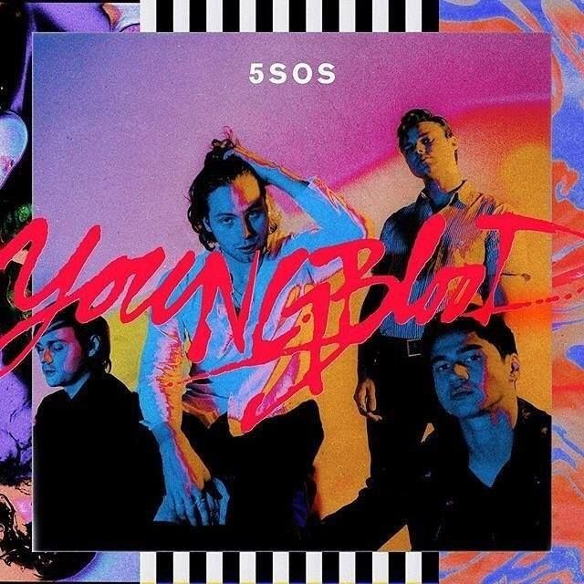
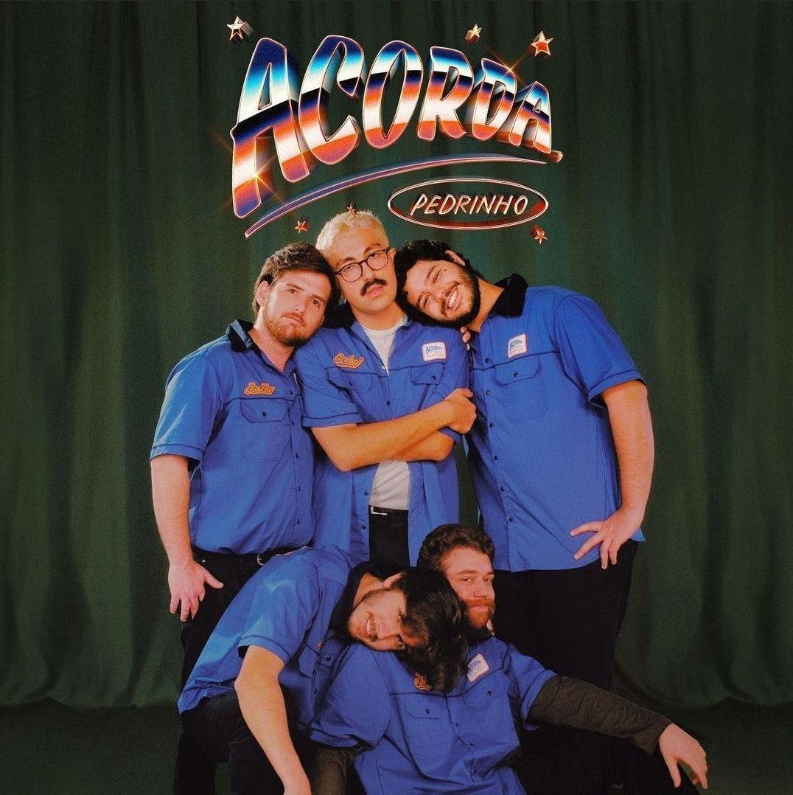
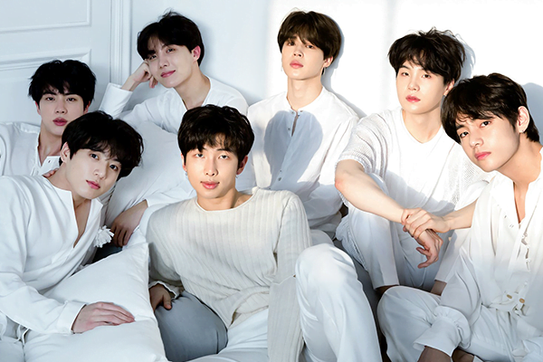
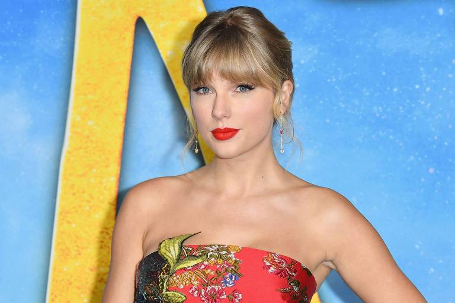
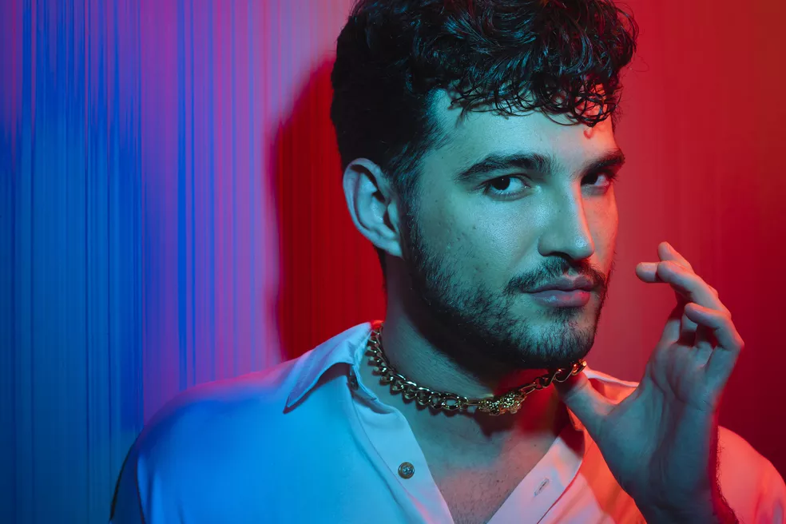
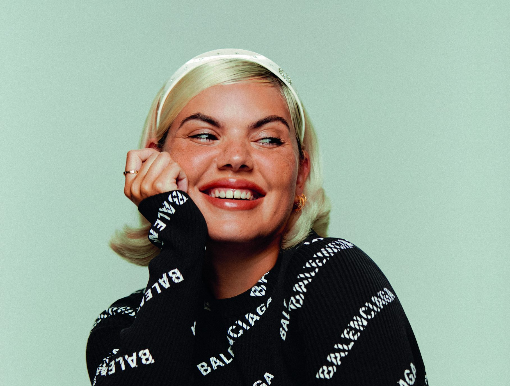
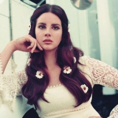
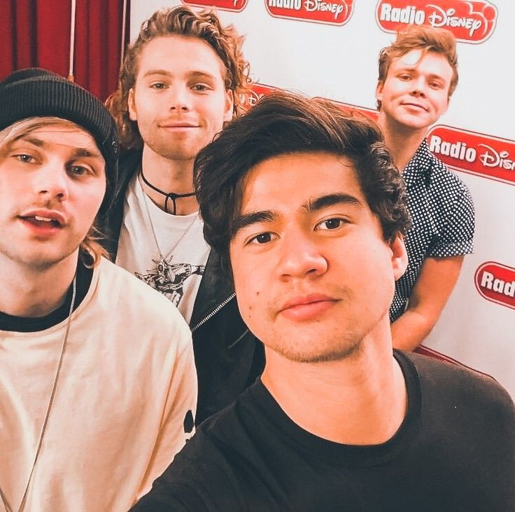

Purple Music
Enviar letra
Confira abaixo os destaques do mês na musica
Bts lança álbum e quebra recordes
Proof é um primeiro álbum antológico lançado pelo grupo sul coreano BTS, apenas três dias antes do aniversário de nove anos de debut do grupo que iniciou sua atividade pela gravadora Big Hit Music em 2013. O primeiro single do álbum, "Yet to Come", teve seu lançamento acompanhado por um music video fazendo referência a várias eras do grupo.
5SOS comemora 4 anos de Youngblood
Dia 15 de julho o terceiro álbum de estúdio da banda australiana 5 Seconds Of Summer completa 4 anos de lançamento, rendendo diversos sucessos como o Single Youngblood, Lie To Me e Ghost of You. Hoje preparamos uma matéria pra quem é fã dos quatro raios de sol reviver o melhor dessa era tão querida da banda…
De Curitiba para o Mundo, Jovem Dionísio
A banda de pop indie Jovem Dionísio foi formada em 2019 na cidade de Curitiba, Paraná. É composta por Bernardo Pasquali, Rafael Dunajski Mendes 'Fufa', Gustavo Karam, Bernardo Hey 'Ber Hey' e Gabriel Dunajski Mendes 'Mendão', Se destacou na última semana com o hit Acorda Pedrinho. Então se você está curioso sobre a banda vamos apresentar a discografia de milhões….
Fofoca? To dentro! Só sei fofocar
Fique por dentro das fofocas mais quentes do mundo dos famosos
Mamãe e noiva também!
Hoje a estonteante Perrie Edwards do grupo musical Little Mix amanheceu com um precioso anel de casamento em seu dedo anelar da mão direita. A loira recebeu o pedido do jogador de futebol britânico Alex Oxlade-Chamberlain, viva aos pombinhos!
Rare Beauty lidera no ramo da beleza
Rare Beauty, marca de cosméticos criada por Selena Gomez, acaba de se tornando a segunda marca de maquiagem de celebridade a ganhar o incrível número de 40 prêmios, ficando atrás apenas de Fenty Beauty de Rihanna. Agora a pergunta que não deixa calar quando o álbum das divas vem para comemorar o marco?
Musicas mais escutadas nesse mês
-
Sick Love
Red Hot Chili Peppers -
Vaya con dios
Kali Uchis -
All Night
Bts, Juice WRLD -
Choram as Rosas
César Menotti & Fabiano -
2000 s2
Luiza Sonza -
Bad Idea
Ariana Grande -
Pretty Please
Dua Lipa -
Love Theory
Taeyong, Wonstein -
Amiga da minha mulher
Seu Jorge -
Good a Bag
Still Woozy -
I'd Rather Have Sex
Anitta -
Would You
The Vamps
Artistas do mês
-  Bts
-  Taylor Swift
-  Jão
 Katy Perry
Katy Perry-  Duda Beat
-  Lana Del Ray
-  5 Seconds Of Summer